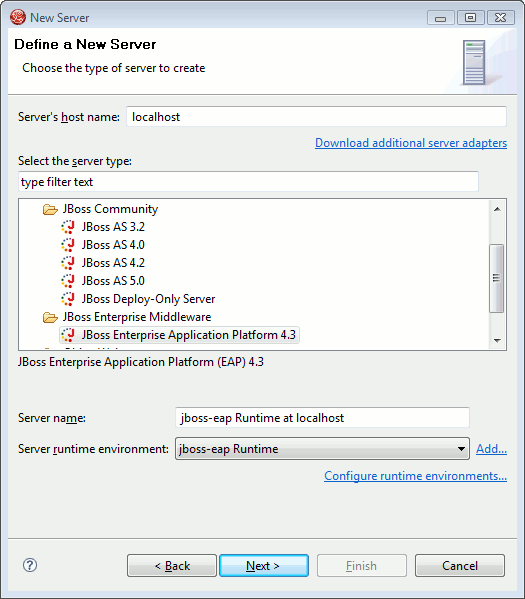
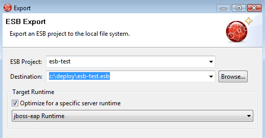

< Main Index Visual Page Editor >
General |
|
|
Seperation of JBoss Community and JBoss product based servers |
There is now a specific server adapter for the productized and supported version of JBoss AS, also called JBoss Enterprise Application Platform(EAP). Making it possible for us to specialize and validate the adapters according to their feature set but also to make it clear which servers are community supported and which are commercially supported by JBoss Enterprise Middleware.  |
|
|
|
|
More control over server launch |
Various improvements have been made to ensure server launches will be started with the proper parameters, classpaths, etc. This have made the launch setup more strict, but there is still a lot of freedom to adjust the server launch as wanted. The servers classpath was in previous releases readonly, but that causes problems for users wanting to add their own jars in the startup classpath. That is relevant in cases where you want to patch the server, add a custom charset or other tweaks that requires early access to the classpath. This is now done by all servers to have a custom 'server runtime classpath container', this container will be there by default and point to the default jars in JBoss. You can now adjust the classpath and just make sure this container is there (if it is not there press 'Restore defaults') if you want us to pick up the classpath. |
Exports |
|
|
Export ESB Archive |
There is now an Export wizard for ESB Archives allowing you to get a .esb archive for i.e. deploying to an external server.  |